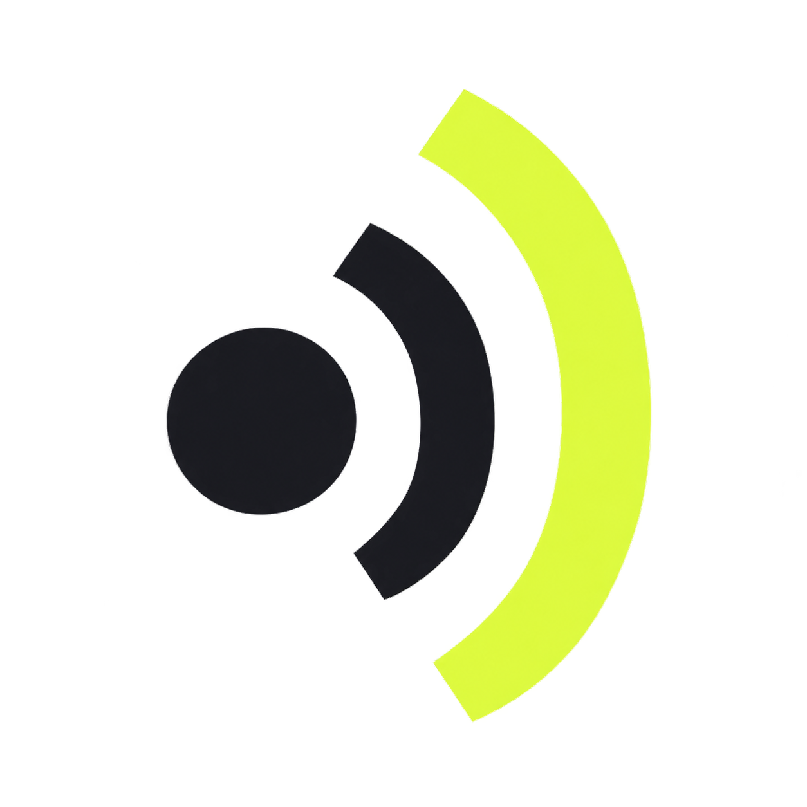

kontaktstoff.
Zwei Menschen. Ein echter Kontakt.
10 Richtungen · Signet links · Wortmarke rechts
Alle Varianten arbeiten mit denselben drei Zutaten: persönlicher Kontakt, etwas Physisches und ein klares Signal. Die Wortmarke bleibt bewusst ruhig.
Zwei Menschen. Ein echter Kontakt.
Eigenständig, kompakt und sofort als K lesbar.
Stärkste RichtungPost wird zum Gespräch.
Mehrere Flächen führen zu einem Kontakt.
Aus Ansprache wird Verbindung.

kontaktstoff.Die Botschaft, die nicht untergeht.
Der Ansprechpartner steckt in der Post.
Zwei Seiten kommen ins Gespräch.
Kontakt, der ineinandergreift und hält.
Outreach mit eingebauter Rückmeldung.